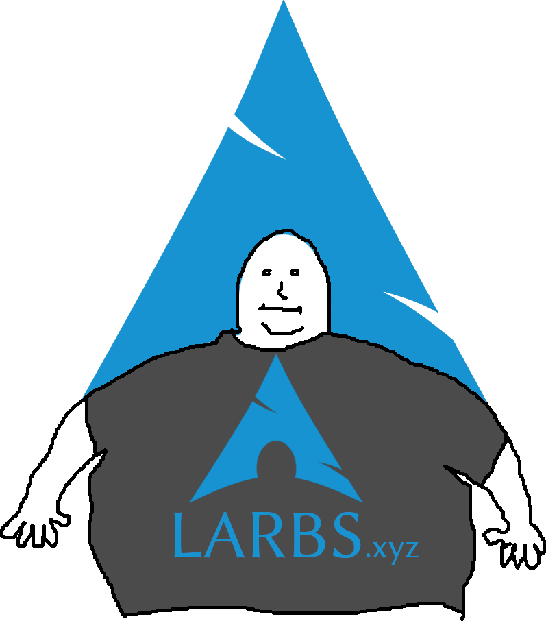

|  |
TARBS is an efficient shell script that will install a fully-featured tiling window manager-based system on any Arch Linux-based system, without any of the routine of manual post-install processes and configuration.
By default, TARBS installs and deploys my own personal dotfiles
But TARBS can also be forked on Github or given command line options to customize it for your own needs: you can have it deploy your own dotfiles and install all prerequisite programs, as TARBS only needs to read a single list of programs, and the script itself is designed to be easily rearranged.
On any (preferrably fresh) install of an Arch Linux-based distribution, just run the following as the root user:
curl -LO allbombson.github.io/TARBS/tarbs.sh
sudo bash tarbs.sh
TARBS will then guide you through installation, which is typically relatively snappy. On my very slow school internet, it takes around 10 minutes.
You can check out the programs list that TARBS parses for installation right here! It also gives a brief explanation of why the program is included.
Note that making your own fork of TARBS is as easy as using your own dotfiles, making a programs file like the one above, and making any other direct changes to the script you want.
You can figure out about the system in a lot of different ways:
super+shift+e.You can also ask me questions via my contact at https://allbombson.pw/contact.
I'll be posting updates about TARBS on Here.
Note: this can be viewed on https://allbombson.pw/TARBS (Perfered), https://allbombson.github.io/TARBS/ or https://github.com/allbombson/TARBS/{kind=link}